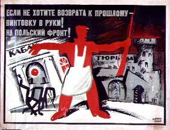
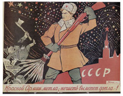
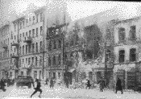
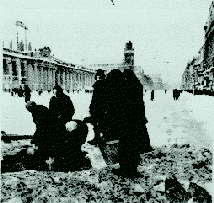
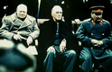
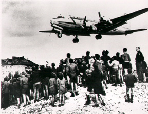
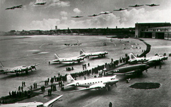

Page index / courses
1940-1950
World War II:


The Nazi-Soviet Pact
Hitler's Invasion of the Soviet Union
The Battle of Stalingrad
The blockade of Leningrad


Yalta, February 1945:

Background on the conference at Yalta
- An outline
of events at Yalta
The Berlin Airlift:
Quick facts about the airlift

